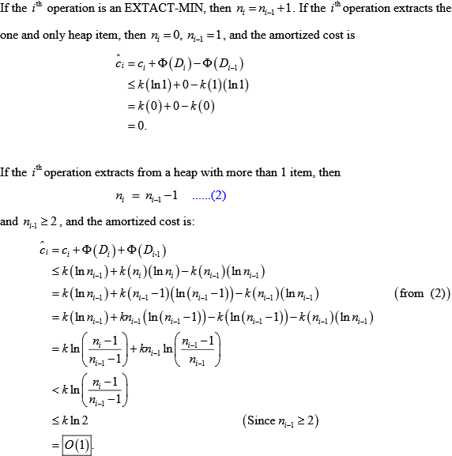
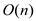

Consider the actual cost for ith operation as follows:
Define the potential function as follows:
and
For n operations the actual cost is as follows:
If n is not an exact power of 2 then the amortized cost, for n operations, is as follows:
Therefore, amortized cost for each operation is ≤3.
If n is an exact power of 2, then the amortized cost, for n operations, is as follows:
Therefore, amortized cost for each operation is ≤4.

Consider that be the potential function, which maps the number of objects in the stack after ith operation.
• Di is the data structure after ith operation.
• Amortized cost for the PUSH operation is 2.
• Amortized cost for the POP and MULTIPOP operations is 0.
• Then the total amortized cost for sequence of n operations is,
Rewrite the above equation as follows:
The total cost of executing  stack operations, assuming the stack begins with
stack operations, assuming the stack begins with
 objects and finishes with
objects is bounded by
.
objects and finishes with
objects is bounded by
.
Calculate the cost of performing n INCREMENT when .
Consider that
• The amortized cost per one increment is 2. i.e. .
• The .That is,
the counter initially have b0 1s and. That is,
after n increments counter has .
.
Then, the actual cost to perform n INCREMENTs is,
Now, consider that the counter initially has b 1s and (i.e. n=c.b, where constant, c ≥ 1). Here, b is not a constant value, but b ≤ k and b ≥ 0. Where, k= number of bits in the counter.
Then, the actual cost to perform n INCREMENTs is,
Since c ≥ 1, ≥ 1
Hence, it is clear that whatever the initial number of 1s that the counter has, the cost for executing at least operations is  .
The requirement is to design a dynamic multi-set. Since it is dynamic and a set, it has the following properties:
• The elements can be inserted into the set dynamically. So, the set must grow to accommodate for this feature.
• Since, it is a set; there is no need to maintain an order of the elements. The elements can be randomly placed.
• Since, it is a multi-set, repetition of the elements is allowed.
Keeping the above properties in mind and the constraints provided, a proper data structure for this is a simple dynamic array. There is no need of sorting the array.
Dynamic array: It is a simple array that grows in size to accommodate more elements.
Let the set represented by the dynamic array be called S.
The following two operations are supported by a dynamic array.
• INSERT(S, x): To insert element x into the set S
• DELETE-LARGER-HALF(S): To delete the largest half elements of the set S
Both these operations when implemented in a sequence of m such operations takes a total of O (m) running time.
The implementation details of the above operations are in the next step.
INSERT( S , x ): The insertion is done in dynamic array at the end of the previous element. To accommodate for the growing property of the dynamic array, the array is deleted and a new array is created when the elements fully accommodate the current array.
This new array that is created is twice the size of the old array. The following steps are followed:
• When there is space available in current array, insert the element at the end of the current element. Complexity of each such insertion is O (1).
• When there is no space available, create a new array of the size twice that of the old array.
• Copy the elements of the old array to the new array. This operation takes O (n) time.
So, the worst time complexity of this operation seems to be O (n). However, each time, a new array is created, the probability of the next such operation occurring decreases significantly. So, the time complexity for a number of insert operations in dynamic array is given by amortized analysis.
Let size of current array is k. And k+1 insert operations are needed.
• The cost of the first k operations = k O(1)
• The cost of the k+1th operation = O(k)
So, a total of 2k operations approximately are needed for k insert operations.
Therefore, over a number of insert operation, the time complexity per INSERT operation is O (1) by amortized analysis.
DELETE-LARGER-HALF( S ):
Deleting the larger half of the multi-set refers to deleting half of the elements which have the highest magnitude. Since, there is no order in a set, instead of going into sorting, just partition the array about the median of the array and then partition it.
The following steps are followed to perform this operation:
• Find the median of the array using the quick select linear time algorithm. This takes O (n) time.
• Compare each element with the median found and thus partition the array into two halves. This also takes O (n) time.
• One half is smaller than the median and the other half is larger than the median.
• Delete the larger half. This takes constant time O (1).
So, the worst time complexity of this operation seems to be O (n). However, each time, the DELETE-LARGER-HALF is executed, the probability of the next such operation occurring decreases significantly. So, the time complexity for a number of DELETE-LARGER-HALF operations in dynamic array is given by amortized analysis.
The amortized analysis of a sequence of INSERT and DELETE-LARGER-HALF is done in the next step.
Amortized analysis:
Although one individual operation may have a worst case of O (n) in this procedure, the cost for performing a sequence of these operations come down significantly. This is shown by the following amortized analysis.
Let there be a sequence of INSERT and DELTE-LARGER-HALF operations such that the total number of operations is m. The Banker’s method of amortized analysis is the following:
According to the Banker’s method, when there are cheaper operations such as INSERT operation (which takes O (1) running time as shown in previous step), extra charge is put on it and that extra imposed charge is used to pay for the cost of the costlier operations later such as the DELETE-LARGER-HALF.
• Assume the cost of INSERT be 2 tokens. So, whenever an element is inserted into the array, 2 token are paid for it.
• When there is DELETE-LARGER-HALF operation, first partitioning along the median is done. This takes cost proportional to the number of elements in the array which is O (n). So, each element pays 1 token each for this operation.
• Now 1 token remains with each element. Delete the larger half of the elements. This causes the tokens on the deleted elements to be distributed among the remaining elements. So, the amount of token with each element after the operations is 2.
Thus, each element started with 2 tokens and at the end of the operation, each element still has 2 tokens.
Therefore, each operation in the sequence of operations is done in constant time O (1).
Since, each operation in the sequence is done in constant time and there are a total of m operations in the sequence.
Hence, the total time complexity for the sequence of operations is O (m) by amortized analysis and since, dynamic array is used to store the elements of the